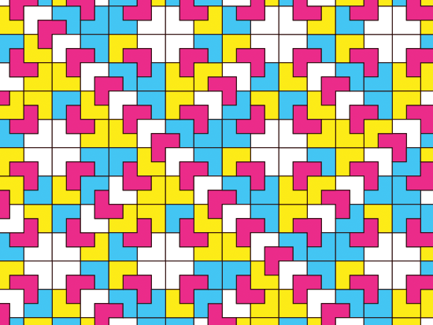
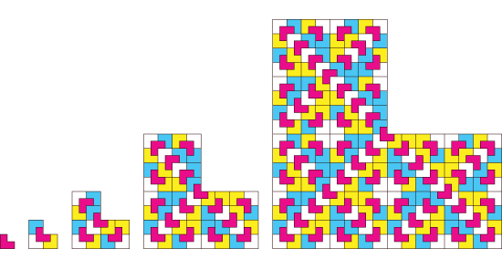
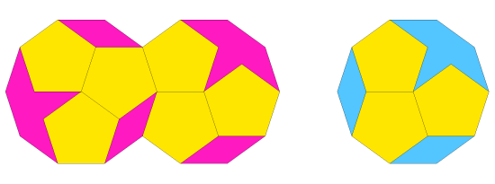
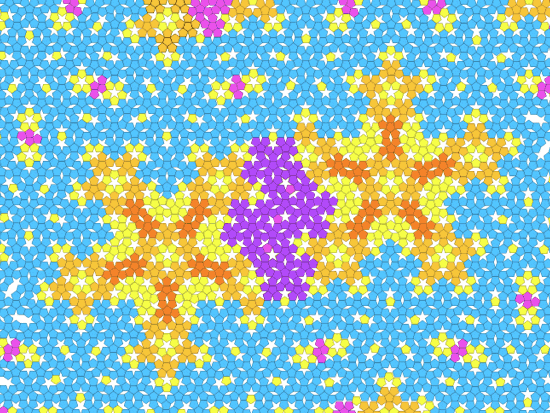
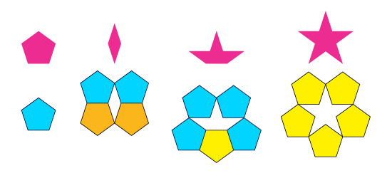
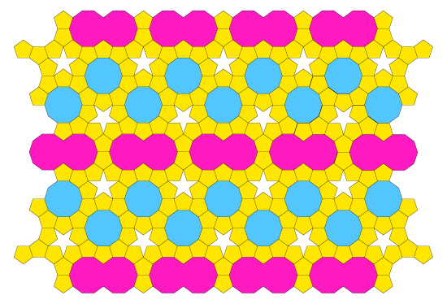
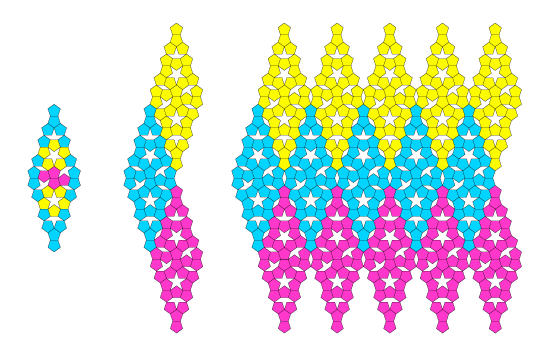
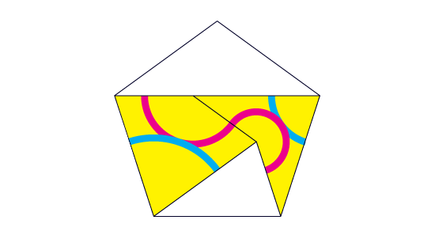
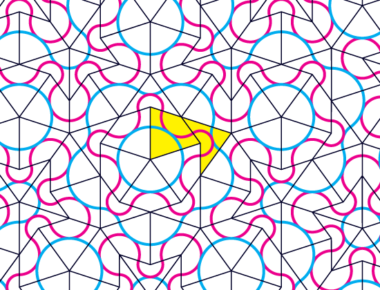
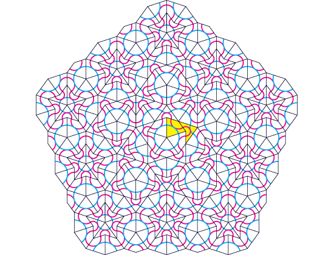

Aperiodic Tilings
Non-periodic tilings are all the tilings that are not periodic. Aperiodic tilings are non-periodic tiings whose tiles can't be rearranged in a periodic manner. When dealing with non-periodic tilings, there can't be found any fundamental shape that could tile the plane by translations. Intuitively, "non-periodic" means that the tiling will never repeat itself, or that different sections of the tiling will always look different. However, there are several known techniques to specify how to construct a non-periodic tiling. An interesting technique, called substitution, relies on the property of some sets of tiles to build bigger copies of themselves after arranging them in the correct way, thus allowing the covered surface to grow as much as it is needed. A comprehensive list of substitution tilings, along with a lot of very nice illustrations, can be found at the Tiling Encyclopedia.
The Chair Tiling
The chair substitution tiling is a simple example of a non-periodic tiling whose construction is easy to understand. It is also an example of a set of tiles that can be arranged both ways, as a periodic tiling (we showed in the section about periodic tilings) or as an non-periodic tiling. Because of this, the chair tiling is not aperiodic.

Four copies of a chair can be used to build a bigger chair, and and then a bigger one, and so on, until the whole plane is covered. This construction process is called inflation.

An equivalent process can be used backwards, by subdividing a given chair into four smaller ones, each one of which could be subdivided again. This process is called deflation.

The Kepler Tiling
Kepler's tiling shows up after exploring one way of not caring about the gaps left between pentagons when trying to arrange them together. Kepler found that he could tile the plane with pentagons after adding three more tiles: stars, decagons, and monsters (built by overlapping two decagons on a diamond shape).

Roger Penrose noticed that the decagons and monsters on Kepler's tiling could be filled with pentagons and a couple of other different tiles (boats and diamonds), reducing the size of the tiles and revealing a more complex structure than the one hidden inside Kepler's deceitful decagons and monsters. Perhaps Kepler overlooked this possibility because he was obsessed with the greek notions of geometric symmetry, and wanted to keep his polygons as regular as possible.


As Kepler did, Penrose added the new three different kinds of gaps (diamond, boat and star) to the pentagon as extra tiles, covering the plane in a beautiful way that resembles the snowflake outline of Koch's curve, and gave Penrose a hint to his later discoveries on aperiodic tilings.


As with the chair tile, there is a way to make a periodic tiling with the Kepler and Penrose pentagonal tiles. Even though the Kepler, Penrose and Chair tilings are non-periodic, they are not truly aperiodic, because the chair tile and the set of pentagonal tiles (pentagon, diamond, boat and star) can be arranged in a periodic manner. However, several clever ideas were devised by mathematicians in the second half of the 20th century to force aperiodicity on a set of tiles.
 
The Penrose Tiling
For a long time it was believed that if a set of bodies tiles the plane non-periodically, then there must be a way of arranging the tiles periodically. It was not until 1964 that Robert Berger showed an example of a set of 20,426 colored domino tiles that tile the plane only non-periodically, thus inventing the first aperiodic tiling in history. Inspired by Kepler's tiling, Roger Penrose found a set of two pentagonal tiles (a kite and a dart, together with a couple of matching rules to prevent making a rhombus with them), that can only be arranged non-periodically, thus discovering the smallest set of bodies that tile aperiodically. Nobody has been able to find a single tile that is aperiodic.


